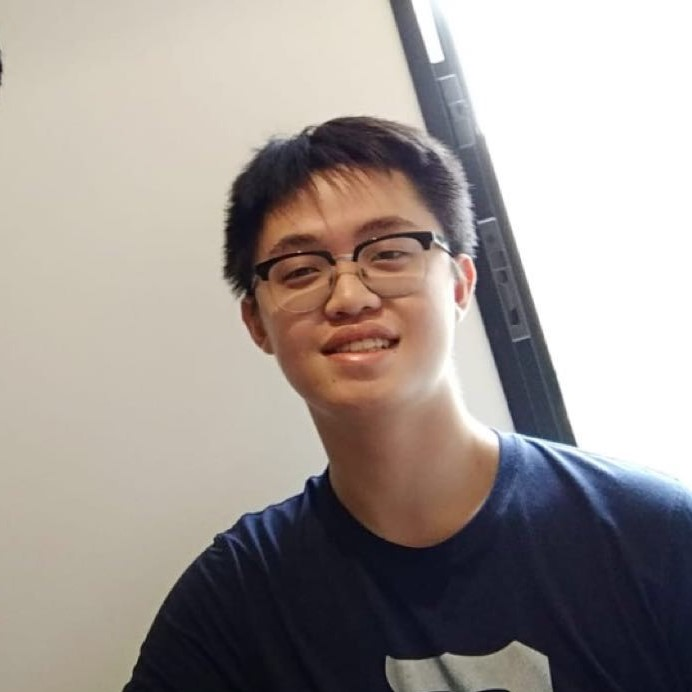

<> Live Free or Die <>

Chuyuan 'Karl' Qu
Mathematics(B.S.)
Computer Science(M.S.)
quchuyuan@gmail.com
Palo Alto, CA
About Me
- 2 year Java Development Experience
- Career：Software Engineer & Data Scientis
Skill Set
Project Experience

Aegis System Design
2020.1 - 2020.4
We built a privacy-preserving machine learning system for cloud computing platforms that protects user data from been stolen by the platforms or the model providers
Haitong Securities Backend Develop
2019.6 - 2019.8
Updated Backend Business Support System Platform (BSP), and responsible for creating an internal dashboard tool(in Java& JavaScript) that is now used to view users' business statuses.
Machine Learning in Higgs
2018.6 - 2018.9
Due to the disadvantages of traditional experimental methods of detecting Higgs Boson, the project was aimed to present a data-driven way to help researchers detect particles.
PROFESSIONAL EXPERIENCE
2019.6 - 2019.8
Software Engineer Intern | Haitong Securities
- Updated Backend Business Support System Platform.
- responsible for creating an internal dashboard tool(in Java& JavaScript).
- Worked on an API Management tool by adding data filtering to the UI.
- Learned and used TomCat, JSP, and Node.js.
- Reviewed code and assessed the impact of submitted changes.
2018.6 - 2018.9
Research Intern | The University of Tokyo
- Worked with Prof. Aihara Hiroaki and his group.
- The main focus was experimental physics and data science.
- Outcome: Machine Learning for Higgs Boson Detection.